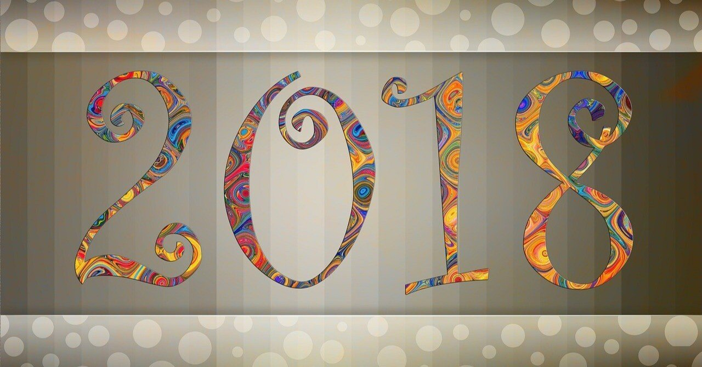

こんばんは。進藤です。
本年ももうすぐ終わりですね。
皆さん、お疲れ様でした。そして大変お世話になりました。
年の瀬でもあるので、ざっと2018年の振り返りをしたいなと思います。
色々と振り返りたい気持ちはありますが、簡単に以下の3日間に焦点を当てたいと思います。
1. 3月31日 2. 10月1日 3. 12月10日
1. 3月31日:活動休止
私はこの日、投稿活動を休止しました。
以前の記事にも書きましたが、理由としては環境の変化による備えと自身の文章力向上・公募の本格的な挑戦のためです。
しかし実際には、休止後しばらくは小説を書く時間もなく、徐々に創作活動自体と距離ができてしまっていました。
https://note.com/embed/notes/n69cc009e36f3
でも結果的に、色々と見えてきた部分がありました。
それは、やはり物を書くことが好きということ。そして、時間は大して残されていないことでした。
仕事に打ち込むことはよい部分ももちろんあります。しかし、仕事は体力も時間もかなり奪うものであり、心身ともに休むことが必要です。
創作活動と離れてはいたものの、私は映画、読書、運動といったごくごく一般的な休日を送ったりしていました。たまには友人たちとも飲みに行ったり、旅行に行ったりとそれはどれも楽しく、私を充実させてくれました。
でも、何か忘れているような感覚がずっとどこかでありました。
それはやはり小説を書くことだと、もう1人の自分が強く言います。
それに気づいてから、私は長編小説の執筆にとりかかりました。
2. 10月1日:活動再開
秋めいてきた10月、私は活動を再開しました。
9月中頃から復帰作の最終調整に入っていましたが、やはり作品作りは楽しかったです。黙々と書いてはいるものの、心は踊っているようでした。
長編小説の方向性も決まったものの、1つの物語以外にも空想の世界は広がり続け、書き留めていく内に「いっそ活動再開しちゃうか」という結論に至りました。
https://note.com/embed/notes/n7b2975ac79be
復帰作となった小説です。
気づいたら暗闇の中にいた男が、同じ空間を彷徨う見ず知らずの人たちと光を求めて、ともに行動する話です。
私はしばしば自己投影した主人公を登場させてしまうのですが笑、この作品の主人公も紛れもない私自身でした。
4月からの生活が決して暗闇であったわけではありません。
でも、大好きな小説を書くことから一旦離れ、慣れない仕事に打ち込んできました。最初はやる気という原動力が体を動かしてくれていましたが、徐々に疲れがたまってきたように思えます。
好きなものを自ら手放したことで、それが自分にとってかけがえのない生きがいである事実を再認識しました。
小説を書くことを手放した私はある意味、光を失った道を歩んでいたのかもしれません。だからこそ、今は好きなものに打ち込めることが幸せに思えるのです。
3. 12月10日:"もう1人の父"投稿
12月10日(noteでは10月15日)投稿のエッセイです。
このエッセイはありがたいことに、インターネット・リアルともに多くの感想をいただいた作品でした。
https://note.com/embed/notes/ncc610bf8db99
創作の世界に足を踏み入れるきっかけをくれた、ある先生との話です。
今の私の原形について赤裸々に書いた初めての作品となりました。
ここでは敢えて多くを語らないようにします。
もし気になってくださった方がいらっしゃれば、ぜひ読んでいただけると嬉しいです。
さて、今年の振り返りとしてはこんなものでしょうか。
では突然ですが、ここで来年の抱負を述べたいと思います。笑
"夢に向かって生きる"
なんて抽象的な抱負でしょうか。笑
もう少し具体的に申しますと、私は今年新たな夢を見つけました。
その夢は大学在学中に一度夢見た職業ですが、自分の不勉強のせいで諦めた夢でもあります。
もちろん、作家になることが一番の夢です。
しかし、その前に叶えたい夢を見つけました。
それは、私が日記を書き始めたことで物を書くのが自然と好きになったのと同じように、その夢を見ることはごく自然の成り行きでした。
ここでその夢について話したい気持ちは山々ですが、やめておきたいと思います。
ぜひその夢を叶えてから話をさせてください。
3年後、5年後、もしかしたら10年後なんてことにもなるかもしれません。
でも、時間がどれほどかかろうと諦めたくありません。諦めません。
一度きりの人生、誰のせいにすることもなく、堂々と胸を張って生きたと言えるように。
そして、その思いが作品となって皆さんのもとまで届くように。
一歩ずつ、着々と前に進んでまいります。
2019年。お互い良い年にしましょう！
皆さんにとって素晴らしい年になりますように、心を込めて。
Have a happy new year!!